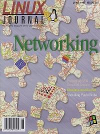

Shutdown Archive web server
Search:
Linux Journal
Issue #38/June 1997

Features
Who Is At the Door: The SYN Denial of Service
by Douglas L. Stewart, P. Tobin Maginnis and Thomas Simpson
What SYN really is, why it's needed in TCP/IP, why the denial of service attack works and how to prevent it.
Network Management & Monitoring with Linux
by David Guerrero
Monitoring network activity is a necessity for today's managers. Here are some handy and easily accessible tools for doing so.
News & Articles
Ghosting onto the Net
by Scott Steadman
Consistent Keyboard Configuration
by John F. Bunch
Reviews
Product Reviews
Wabi 2.2
by Dwight L Johnson
Product Reviews
OSS/Linux Sound Driver
by Jeff Tranter
Book Reviews
Linux in a Nutshell
by Sid Wentworth
Book Reviews
Programming with GNU Software
by Randyl Britten
WWWsmith
Using MSQL in a Web-Based Production Environment
by B. Scott Burkett
At the Forge
Creating a Multiple Choice Quiz System
by Reuven Lerner
Marketsmith
by Doc Searls
Columns
Letters to the Editor
From the Editor
LG and IELG
Stop the Presses
Uniforum '97
by Marjorie Richardson
Linux Means Business
Traveling Linux: An Implementation Experience
by Maurizio Cachia
Kernel Korner
Booting the Kernel
by Alessandro Rubini
New Products
Best of Technical Support
Archive Index
Shutdown Archive web server
Search:
Copyright © 1994 - 2018
Linux Journal
. All rights reserved.